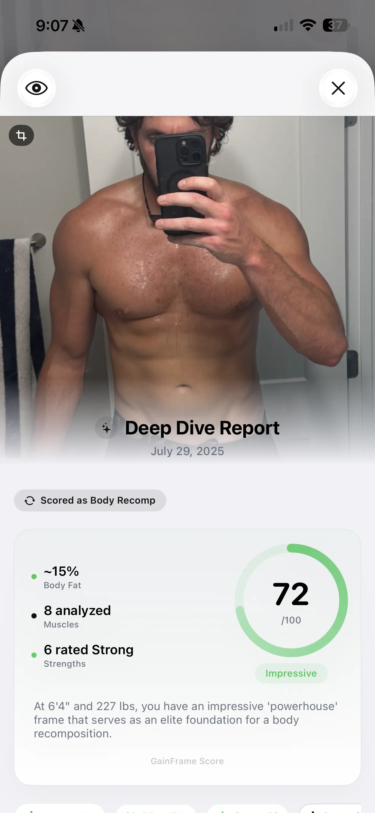
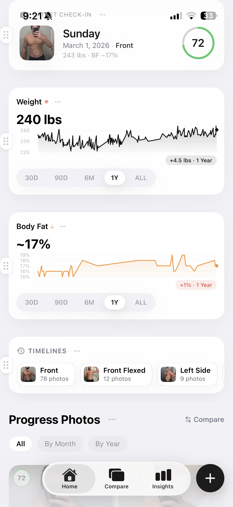
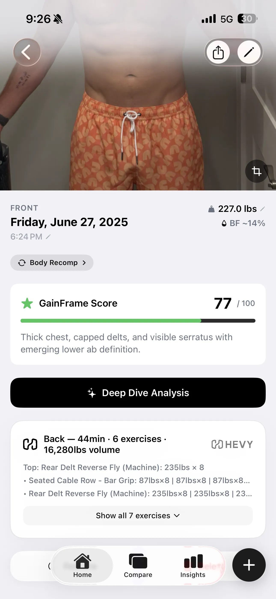

Is AI Body Fat Analysis Accurate? A 2025 Study Says Yes
A peer-reviewed study in npj Digital Medicine tested AI photo-based body fat estimates against DEXA scans, smart scales, and calipers across 1,273 adults. The results challenge everything we assumed about accessible body composition tracking.
Advances in the estimation of body fat percentage using an artificial intelligence 2D-photo method
CCC ≥ 0.96 agreement with DEXA across 1,273 adults
Read the full study →For years, anyone serious about tracking body composition faced a frustrating choice. Pay for a DEXA scan that costs anywhere from $75 to $150 per visit. Or rely on a smart scale that shifts based on whether you drank coffee that morning.
The fitness industry accepted this as normal. But a peer-reviewed study published in npj Digital Medicine suggests that AI photo-based body fat estimates have reached performance levels comparable to clinical methods. "Accuracy" here means statistical agreement between methods across a population, not a guarantee of perfect individual readings. The study's findings offer promising evidence that smartphone photos could become a practical alternative to expensive lab visits.
What researchers actually tested
The Brazilian research team designed a comprehensive head-to-head comparison. Every participant received a clinical DEXA scan to establish ground truth. Then researchers measured the same people using five alternative methods:
- Bioelectrical Impedance Analysis (BIA) — Two popular models of smart scales (InBody-270 and Omron HBF-514).
- Skinfold Calipers — The traditional pinch test performed by a certified professional.
- A-Mode Ultrasound — Localized tissue scanning.
- AI 2D Photo Analysis — An automated model extracting geometric body features from two smartphone photos (front and side profiles). No special equipment. No trained technician. Just photos taken under controlled conditions.
The 0.98 correlation result
According to the published findings, the AI photo method achieved a 0.98 Concordance Correlation Coefficient (CCC) with DEXA results. CCC measures how closely two methods agree, with 1.0 being perfect agreement. At 0.98, the AI photos showed strong agreement with clinical imaging equipment — the highest of any method tested in the study.
The smart scales scored in the 0.91–0.92 CCC range, according to the same paper. That gap matters more than it appears — it can represent the margin between useful data and noise that derails your decisions. The researchers also reported no proportional bias in the AI photo method. Whether someone carried 12% body fat or 35%, the accuracy held steady across both sexes and diverse BMI categories.
For full methodology details, sample sizes, and device-specific results, refer to the original paper in npj Digital Medicine.
Why AI photos beat smart scales and calipers
Smart scales dominate the consumer market. Personal trainers still reach for calipers. Both methods have fundamental problems that AI photo analysis avoids.
Smart scale limitations
Bioelectrical impedance analysis sends a small current through your body and measures resistance. Simple concept, but highly sensitive to variables beyond your control. Your hydration level changes the reading substantially — sometimes enough to mask or exaggerate actual body composition changes between sessions. The study confirmed this variability with CCC scores of 0.91–0.92.
Caliper and ultrasound drawbacks
Skinfold calipers require a trained professional. Different technicians get different results. Even the same technician varies between sessions. Ultrasound offers better precision but requires expensive equipment and expertise. Neither method scales to weekly tracking at home.
From lab research to your phone
Peer-reviewed validation matters. But research findings only help if they translate outside controlled settings. The study used standardized lighting and positioning. Real-world photos come with shadows, varying angles, and inconsistent backgrounds.

In practice, you'll get more consistent results if you standardize your photo routine. Same spot, same time of day, same lighting. Some apps — including GainFrame — take this further by cross-referencing multiple angles (front, side, back) with your biometrics (age, sex, height, weight) to reduce the noise that any single photo can introduce.
Visual tracking beyond body fat
DEXA scans measure tissue density. They cannot assess how you look or track visible changes over time. Progress photos offer additional context that pure numbers miss:
- Visible changes in muscle definition and shape
- Noticeable differences in how clothes fit
- Left-right asymmetries you might want to address in training
- Overall posture changes you can discuss with a trainer or physiotherapist

Trend lines matter more than individual readings. Watch the direction over months, not the number on any single day. Expect meaningful changes to appear over 4–6 week windows, not days. A 1–2% body fat shift represents real progress. Anything smaller falls within normal measurement variation.
Building your complete tracking system
Accurate body fat numbers mean nothing in isolation. The real value emerges when you connect composition data to your actual training. Are your workouts producing results? Is your nutrition plan working?

Modern fitness apps sync with Apple Health and platforms like Hevy. This means your progressive overload data can align with your visual tracking. When body fat trends down while strength numbers climb, you know your program works. When the opposite happens, you have early warning to adjust. Without this connection, you're guessing. With it, you're managing your physique with actual data.
What the study did NOT test
The 2025 paper validated a specific two-photo protocol under controlled laboratory conditions. It did not test:
- Three-angle or multi-photo protocols
- Home lighting conditions vs. lab conditions
- Accuracy of combining photo analysis with other biometric data
- Performance of specific consumer apps (the study used its own research model)
Claims about "multi-angle analysis improving accuracy" or "biometric cross-referencing delivering tighter estimates" are practical hypotheses, not validated findings. Until researchers test these approaches directly, treat them as reasonable strategies for reducing user error rather than proven accuracy improvements.
Limitations and what we still don't know
This is a single study, and replication matters. The 0.98 CCC result is promising, but it came from one research team using one AI system under controlled conditions. Lab validation doesn't automatically translate to your bathroom mirror, where lighting and positioning vary.
Different AI apps may perform differently. Until independent researchers replicate these findings across multiple populations and real-world conditions, treat the results as strong preliminary evidence rather than settled science.
The bottom line
The 2025 npj Digital Medicine study adds promising evidence to a long-running discussion about accessible body composition tracking. AI body fat analysis showed performance comparable to clinical DEXA scans in this dataset, while outperforming the smart scales and calipers most people actually use.
- Take standardized photos — same lighting, same angles, same time of day.
- Track the trend — focus on 4–6 week windows, not single readings.
- Combine data points — photos + scale weight + how clothes fit gives you the clearest picture.
- Stay skeptical — no method is perfect. Use multiple benchmarks and watch the direction, not the number.
Spending hundreds of dollars on lab visits may become less necessary as this technology matures. Your phone camera, combined with consistent photo protocols, shows genuine promise for tracking real progress. The research warrants serious consideration, though further validation in real-world conditions will strengthen the case.